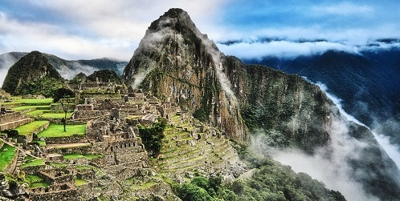

machu picchu tambem chamada ("cidade perdida dos incas") é uma cidade pré-colombiana bem comservada localizada no topo de uma montanha a 2400 metros de atitude, no vale do rio Urubanda atual peru. em 1865 no curso de exploração de suas viagems pelo peru o naturalista italiano antonio raimondi passou ao pé das ruinas sem sabe-lo e menciona o quam escassamente era povoada a região na epoca porem tudo indica que foi por esses anos que a reião começou a receber visitas por intereses
de fato uma investigasão ainda em curso e divulgadas em 2008 pelo diario espanho ABC Realizado pelo historiador e explorador paolo greer revela que o empresario alemão Augusto Berns não so avia descoberto as ruinas em 1867 quarenta anos antes da data conhecida mas tambem tinha fundado uma empresa mineradora para explorar os tesouros que a brigava ainda de acordo com paolo greer entre 1867 e 1870 e com a aprovação do governo peruano de jose balta, que cobrava 10% dos lucros essa companhia avia operado na zona e vedido tudo que encomtrara a colecionadores europeus e norte-americanos

ainda de acordo com paolo greer, entre 1867 e 1870 e com a aprovação do governo peruano de josé Balta que cobrava 10% dos lucros, esta companhia havia operado na zona e vendido "tudo o que encontrara" a colecionadores europeus e norte-americanos